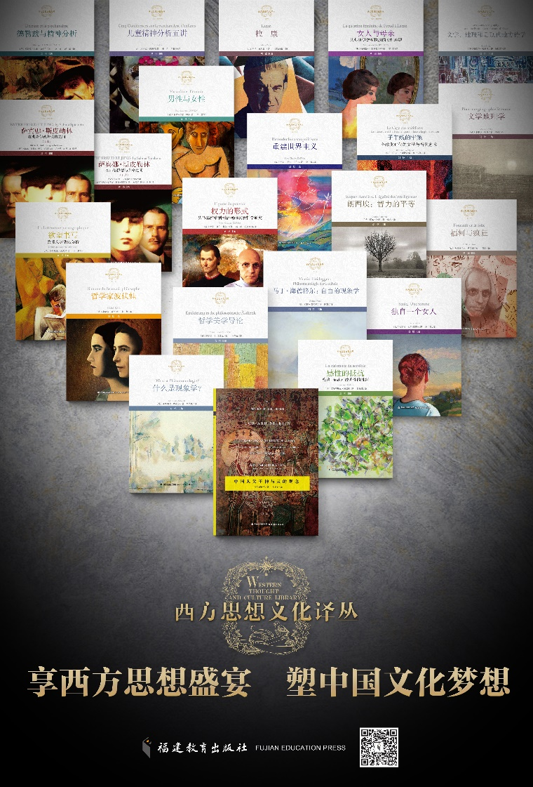

创刊号
已具备封面视觉，详情层用于展示目录、出版计划与投稿状态。
期刊页不再只是首页上一张卡，而是独立承载“办刊说明 + 当前进度 + 往期 / 预备期目录”的页面。点击 issue 卡片后，采用和活动卡片相近的详情展开方式。

《近代哲学》拟作为现代思想研究中心的重要出版平台，以问题意识、思想史深度与中外对话为三条主线展开。期刊页更适合呈现每一期的封面、目录、出版状态与编辑计划。
这版先做三张 issue 卡：第一期、第二期、第三期。后续只需继续往下追加卡片和详情数据。
已具备封面视觉，详情层用于展示目录、出版计划与投稿状态。
保留选题、编委工作与组稿进度的展示位，后续可替换为真实封面。
预留未来期次归档入口，方便持续向后扩展。